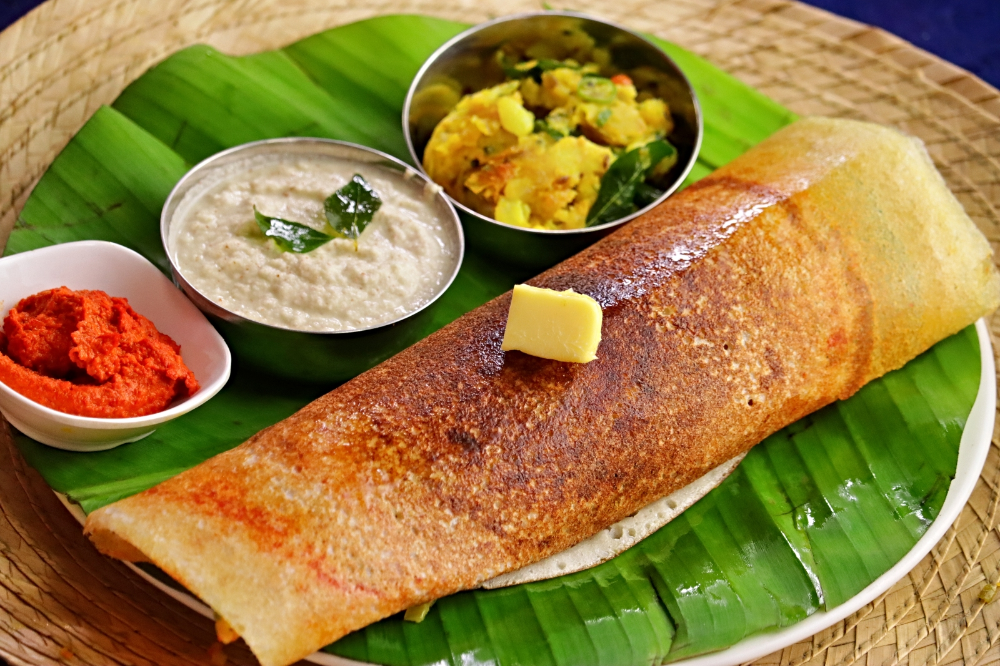
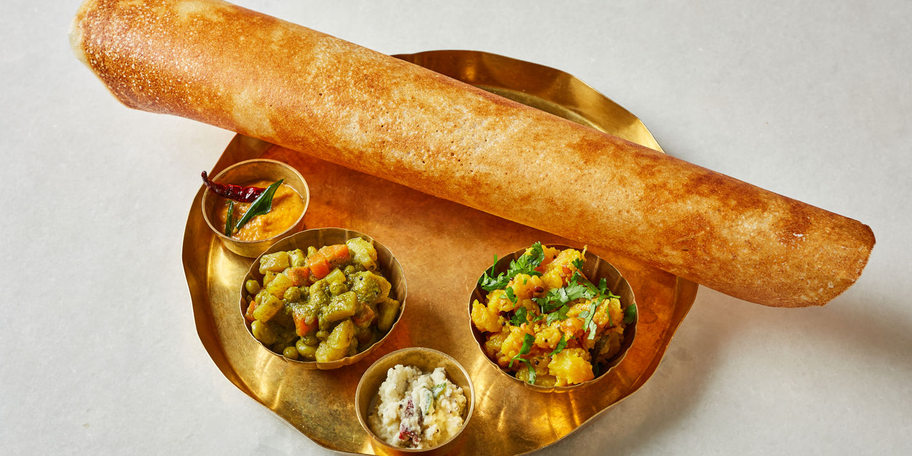
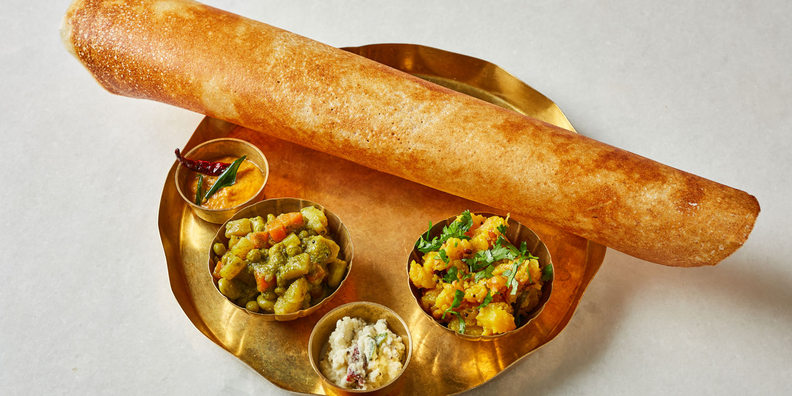

It is a type of dosa originating in the town of Udupi, Karnataka. While there is variation in the recipe from town to town,
the basic recipe typically starts with a fermented batter of parboiled rice, poha, and various legumes
(black gram, pigeon peas, chickpeas), and incorporates various spices for flavour, such as fenugreek and
dry red chilli. Traditionally served with potato curry, chutneys, and sambar, it is a common
breakfast item in South India,though it can also be found in many other parts of the country and overseas.
One common variant is the paper masala dosa, which is made with a thinner batter, resulting in a crisper, almost paper-thin final product. 
 

Ingredients for Masala Dosa
Dosa Batter:
1}Rice: 2 cups (preferably parboiled rice or dosa rice)
2}Urad Dal (black gram): 1/2 cup
3}Chana Dal (Bengal gram): 2 tablespoons
4}Toor Dal (pigeon pea): 2 tablespoons
5}Methi Seeds (fenugreek seeds): 1 teaspoon
6}Salt: to taste
7}Water: as needed for soaking and grinding
8}Oil or Ghee: for cooking the dosas
Potato Filling (Masala):
1}Potatoes: 3-4 medium-sized, boiled and mashed
2}Onions: 1 large, thinly sliced
3}Green Chilies: 2-3, finely chopped
4}Ginger: 1-inch piece, finely chopped or grated
5}Mustard Seeds: 1 teaspoon
6}Urad Dal (black gram): 1 teaspoon
7}Chana Dal (Bengal gram): 1 teaspoon
8}Turmeric Powder: 1/2 teaspoon
9}Curry Leaves: 8-10 leaves
10}Asafoetida (Hing): a pinch
11}Salt: to taste
12}Oil: 2 tablespoons
13}Fresh Coriander Leaves: a handful, chopped
14}Lemon Juice: 1-2 teaspoons (optional)
For Serving:
1}Coconut Chutney
2}Sambar
3}Tomato Chutney
Preparation Steps:
-Making the Dosa Batter
1}Soaking: Rinse the rice, urad dal, chana dal, toor dal, and methi seeds. Soak them together in enough water for at least 4-6 hours or overnight.
2}Grinding: Drain the soaked mixture and grind it to a smooth batter using a blender, adding water as needed to achieve a pouring consistency.
3}Fermenting: Transfer the batter to a large bowl, add salt, and mix well. Cover and let it ferment in a warm place for 8-12 hours or until it doubles in volume.
-Preparing the Potato Filling:
1}Tempering: Heat oil in a pan, add mustard seeds, and let them splutter. Add urad dal, chana dal, and sauté until they turn golden brown.
2}Aromatics: Add curry leaves, green chilies, ginger, and a pinch of asafoetida. Sauté for a minute.
3}Onions and Spices: Add the sliced onions and sauté until they turn translucent. Add turmeric powder and mix well.
4}Potatoes: Add the mashed potatoes and salt. Mix everything well and cook for a few minutes until the mixture is well combined. Add chopped coriander leaves and lemon juice, if using. Mix well and set aside.
-Making the Dosa:
1}Heating the Pan: Heat a non-stick pan or a cast-iron griddle on medium-high heat. Lightly grease it with oil.
2}Spreading the Batter: Pour a ladleful of batter onto the center of the pan and spread it evenly in a circular motion to form a thin crepe.
3}Cooking: Drizzle a little oil or ghee around the edges and cook until the dosa turns golden brown and crisp.
4}Filling: Place a portion of the potato filling in the center of the dosa. Fold the dosa over the filling and remove it from the pan.
5>Repeat: Repeat with the remaining batter and filling.